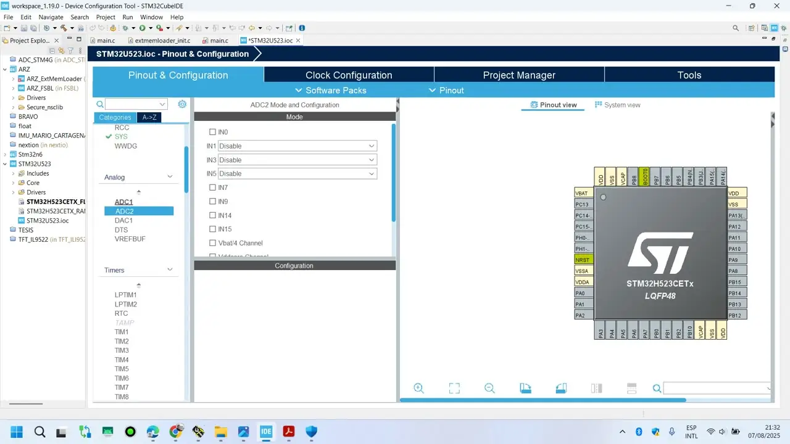

Corre a 250 MHz, tiene 512 KB de flash (igual que la Blackpill F411) y 274 KB de RAM.
Es compatible en pines con la Blackpill y cabe en el protoboard.
Video corto sobre la tarjeta WeAct con el STM32H523CET6. La H indica alto desempeño: corre a 250 MHz, con 512 KB de flash y 274 KB de RAM. Tiene el formato y los pines de la Blackpill, cabe en el protoboard y es más económica que la U585. En CubeMX se revisan sus periféricos: dos ADC, DAC, sensor de temperatura, timers de bajo consumo, dos FDCAN, I2C e I3C, OCTOSPI para memoria externa, cuatro SPI, varios UART, USB tipo C, HDMI-CEC e I2S para audio.

Corre a 250 MHz, tiene 512 KB de flash (igual que la Blackpill F411) y 274 KB de RAM.
Es compatible en pines con la Blackpill y cabe en el protoboard.
La U585 de WeAct es más costosa: tiene más RAM y flash (784 KB y 2 MB) y filtros digitales, pero corre a 160 MHz.
Para reemplazar la F411 y trabajar comunicaciones o filtros digitales, la H523 tiene muy buena relación precio/desempeño.
Proteus no la simula, así que los montajes se hacen físicamente.
Dos conversores ADC con varios canales cada uno, DAC para salida análoga, sensor de temperatura interno (DTS) y VREFBUF.
Además de los timers normales, trae dos timers de bajo consumo (LPTIM).
Dos FDCAN, tres I2C y el nuevo I3C (dos puertos), LPUART de bajo consumo, OCTOSPI para ampliar la memoria con una flash externa, cuatro SPI y cinco UART/USART más el LPUART.
USB con conector tipo C.
HDMI-CEC para enviar órdenes a un televisor por el cable HDMI (cambiar canal, encender, etc.), tres puertos I2S para audio y bloques de seguridad.